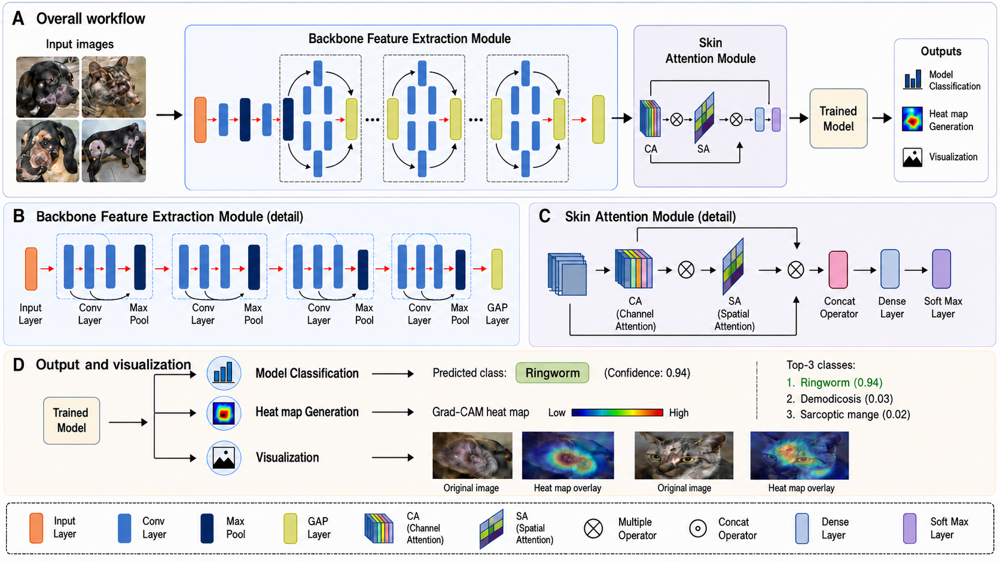

Veterinary computer vision · Research release
Attention built for every species.
A lightweight multi-species dermatology classifier combining channel–spatial attention, global–local feature fusion, species-assisted decoding, and mobile deployment artifacts.
Manuscript metrics
Compact model. Auditable results.
Known-species constrained decoding on cats, cattle, and dogs. The external cohort is an internet-derived development robustness set, not a locked prospective clinical validation cohort.
Model path
Five ideas, one efficient classifier.
Backbone
EfficientNetV2-B0 extracts compact visual representations.
Channel attention
Reweights informative feature channels.
Spatial attention
Highlights lesion-relevant spatial regions.
Global–local fusion
Combines context with localized morphology.
Dual heads
Predicts species and species-assisted disease classes.
Architecture
Designed for transparency and deployment.
Reproducible release
Training code, checkpoint metadata, source-data tables, and publication figures are organized for audit.
Mobile benchmark
PyTorch and TensorFlow Lite artifacts support comparison from research training to compact inference.
Explicit boundaries
Reported outputs are image-classification candidates—not diagnoses or treatment recommendations.

Scientific boundary
Decision support, not autonomous diagnosis.
DSAN/VetDerm-Mobile is a research benchmark and lightweight screening prototype. Veterinary review remains necessary, especially for uncertain, zoonotic, contagious, herd-health, or low-quality submissions.